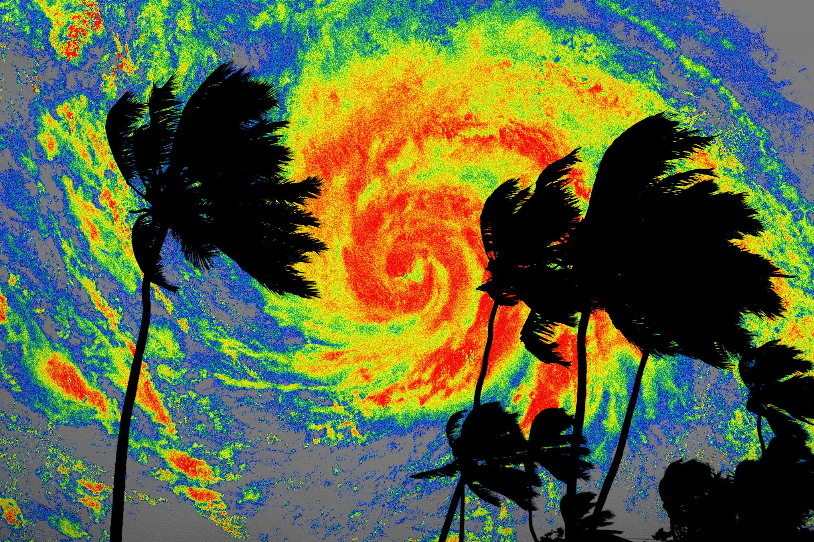

Обычные физические модели погоды и нейросетевые предсказатели одинаково теряют точность за горизонтом в две недели: погрешности приближений накапливаются, а системное смещение уводит результат в сторону — например, модель, обученная на исторических наблюдениях, в быстро теплеющем климате склонна предсказывать погоду холоднее, чем она есть. Исследователи Microsoft Research пошли неочевидным путём: вместо ещё одной самостоятельной модели они сделали инструмент Probabilistic Bias Correction (PBC), который машинным обучением исправляет именно смещение уже готовых прогнозов, опираясь на то, как модель ошибалась в прошлом.
Как пишет Nature и официальная страница Microsoft Research, PBC применялся к вероятностным прогнозам ведущих физических и нейросетевых моделей ECMWF. Результат: удвоение скромной полезности AI Forecasting System на субсезонных сроках и улучшение операционной физической модели для 91% целевых показателей давления, 92% показателей температуры и 98% показателей осадков. В реальном соревновании ECMWF 2025 года глобальные прогнозы PBC заняли первое место по всем переменным и всем дальностям, обойдя системы шести оперативных метеорологических центров, международный ансамбль и предсказания 34 команд со всего мира.
Физические модели требуют суперкомпьютеров, генеративные — мощных GPU. Старший научный сотрудник Microsoft Research Lester Mackey подчёркивает: PBC считается исключительно на CPU. Для метеослужб с скромным бюджетом это способ получить выигрыш в точности на сроках от двух до шести недель без новой железной инфраструктуры — ровно тот горизонт, который нужен фермерам, энергетикам и спасателям для планирования.
Работа опубликована 14 октября в журнале Nature, а код выложен как открытое программное обеспечение на GitHub (репозиторий Mouatadid/pbc). Microsoft присоединяется к Google и Nvidia, которые уже развивают ИИ-метеорологию, но занимает в этой гонке нишу «надстройки», а не «замены»: PBC не конкурирует с моделями, а делает их полезнее. Официальный анонс компания оформила страницей исследования на сайте Microsoft Research; отдельного пресс-релиза с цифрами, помимо публикации в Nature, пока нет.